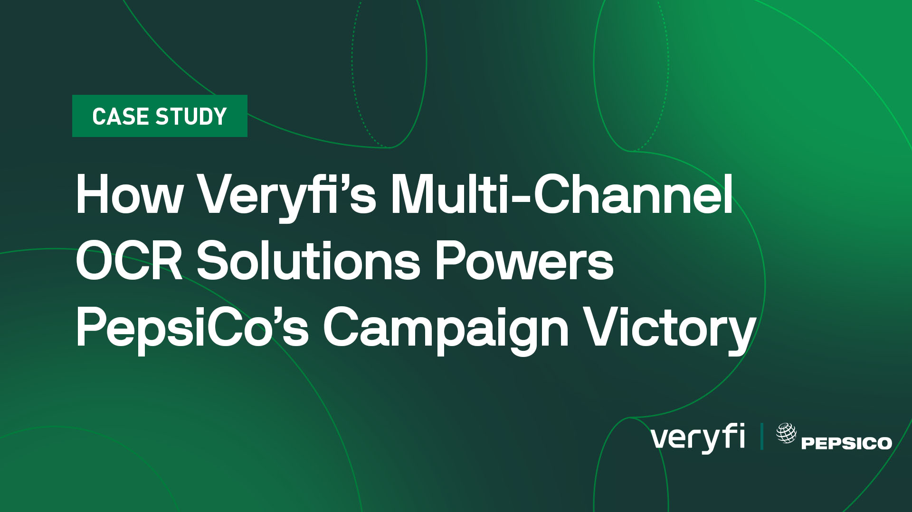

veryfi
about veryfi
veryfi is a YC-backed fintech startup that turns messy receipts and documents into clean, structured data using AI. think of it as the smartest OCR on the planet automating expense management, fraud detection, and data extraction for enterprises who are tired of manual entry.
as the company scaled, they needed marketing that could turn AI tech into stories people actually wanted to read. that's where i came in.
my role
at veryfi, i worked as many different roles: strategist, writer, video producer, motion designer, and occasional internal hype person. i owned everything from "what should we make?" to "here's the final edit, shipping now."
my approach? data first, human second. i'd start with analytics to figure out what people actually cared about, then translate technical lingoes into stories that are easier to digest. every video, case study, and blog post was designed to move someone through the funnel.
tools & software
marketing & analytics:
creative production:
motion graphics & animations
product demo videos
customer case studies




technical blog content


social media shorts
impact & results
here's what actually mattered: the videos became veryfi's most watched content and drove a prominent increase in leads. case studies shortened sales cycles because prospects could finally see proof that this stuff works in the real world. blog posts consistently brought in organic traffic and positioned veryfi as the go to expert in fraud prevention and OCR. and those social shorts? they expanded reach to audiences who'd never heard of veryfi before (i scored 3000% increase in engagement within my first month — wohoo).
good content isn't just "nice to have" for B2B, it's a growth engine. you just have to make it actually good.